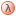

definitions/Tags.inc.php
Show:


 inherited
inherited
 Constants
Constants
- kTAG_AFFILIATION
- kTAG_AUTHORITY
- kTAG_CATEGORY
- kTAG_CLASS
- kTAG_COLLECTION
- kTAG_CONN_BASE
- kTAG_CONN_COLL
- kTAG_CONN_HOST
- kTAG_CONN_OPTS
- kTAG_CONN_PASS
- kTAG_CONN_PORT
- kTAG_CONN_PROTOCOL
- kTAG_CONN_USER
- kTAG_DATA_KIND
- kTAG_DATA_TYPE
- kTAG_DEFINITION
- kTAG_DESCRIPTION
- kTAG_DOMAIN
- kTAG_ENTITY_COUNT
- kTAG_ID_LOCAL
- kTAG_ID_PERSISTENT
- kTAG_ID_SEQUENCE
- kTAG_ID_VALID
- kTAG_LABEL
- kTAG_LANGUAGE
- kTAG_NAME
- kTAG_NAMESPACE
- kTAG_NID
- kTAG_NOTES
- kTAG_OBJECT
- kTAG_PREDICATE
- kTAG_SEQUENCE_START
- kTAG_SUBJECT
- kTAG_TAG
- kTAG_TAGS
- kTAG_TERM
- kTAG_TERMS
- kTAG_TEXT
- kTAG_UNIT_COUNT
- kTAG_VERSION
- 
Functions
Default attribute tags.
This file contains the default ontology tag definitions, these offsets represent the
default tags used in the objects comprising the ontology and the core objects of this
library.
Each entry is a definitions that holds the global identifier of the tag.
- Author
- Milko A. Škofič
- Version
- 1.00 13/01/2014
Constants
kTAG_NID
= '_id'Native identifier (
_id)This offset is the primary key of all persistent objects, it doesn't have a
specific data type and all objects must have it. This attribute is internal and it is not
defined in the ontology.
kTAG_CLASS
= '_class'Class (
_class)This offset represents the object class name, this string is used to
instantiate the correct object once loaded from a container. This attribute is internal
and it is not defined in the ontology.
kTAG_DOMAIN
= 1Domain (
:domain)This tag represents the domain of an object, it is an enumerated set of
term object references which represent the kind or nature of
the object, this type of property is used to disambiguate objects of different
domains within a single collection..
kTAG_AUTHORITY
= 2Authority (
:authority)This tag is a string representing the native identifier of the
entity object which is responsible for the identification of an object,
or which is the author of the information regarding an object.
kTAG_COLLECTION
= 3Collection (
:collection)This tag is a string representing the name or code of the
collection to which an object belongs. It has the same function as the
namespace, except that it is may not be an enumerated set.
kTAG_NAMESPACE
= 4Namespace (
:namespace)This tag is a reference to a term object, it is a string representing
the native identifier of a term. Namespaces are used to disambiguate
homonym local identifiers in order to come up with a global unique identifier. This
identifier is persistent.
kTAG_ID_LOCAL
= 5Local identifier (
:id-local)This tag is a string which represents the local identifier of an
object. Local identifiers are unique within their namespace and are
persistent. In general, the namespace is concatenated to the local identifier to
form the persistent identifier.
kTAG_ID_PERSISTENT
= 6Persistent identifier (
:id-persistent)This tag is a string which represents the persistent identifier of an
object. Persistent identifiers are unique across namespaces, they are
global, in that they include the namespace and they are
persistent. In general, this identifier is the concatenation of the namespace
and the local identifier.
kTAG_ID_VALID
= 7Valid identifier (
:id-valid)This tag is a string which represents the persistent global identifier
of the object that is considered the valid choice. This is generally used by
legacy or obsolete objects for referring to the valid,
current or official object.
kTAG_ID_SEQUENCE
= 8Sequence number (
:id-sequence)This tag is an integer sequence number which is automatically assigned
to objects just before they are committed. This represents an identifier
unique to the collection to which the object belongs. This identifier is not
persistent, in that it depends on the order in which the object was committed.
kTAG_VERSION
= 9Version (
:version)This tag is a string representing a version or an iteration.
It is generally used to identify different versions of an object by disambiguating
duplicate persistent identifiers, or to provide a time-stamp to the object
information it identifies.
kTAG_TAG
= 10Tag (
:tag)This tag holds a string representing a tag object reference, it is the
tag native identifier of the tag object it references.
kTAG_TAGS
= 11Tags (
:tags)This tag holds a list of strings representing tag object references,
these elements are the native identifiers of the tag objects they
reference.
kTAG_TERM
= 12Term (
:termThis tag holds a string representing a term object reference, it is the
native identifier of the term object it references.
kTAG_TERMS
= 13Terms (
:termsThis tag holds a list of strings representing term object references,
these elements are the native identifiers of the term objects they
reference.
kTAG_SUBJECT
= 14Relationship subject (
:relationship:subjectThis tag holds an integer representing a node native identifier, it is
a reference to a node object through its sequence number. This tag
describes the origin vertex of a directed graph relationship.
kTAG_PREDICATE
= 15Relationship predicate (
:relationship:predicateThis tag holds a term object reference, it is a string that represents
the term native identifier. This tag describes the predicate of a directed
graph relationship.
kTAG_OBJECT
= 16Relationship object (
:relationship:objectThis tag holds an integer representing a node native identifier, it is
a reference to a node object through its sequence number. This tag
describes the destination vertex of a directed graph relationship.
kTAG_AFFILIATION
= 17Affiliation (
:affiliationThis tag holds a string representing an entity native identifier, it is
a reference to the entity object which represents the affiliation of the current
entity object.
kTAG_CATEGORY
= 18Category (
:categoryThis tag holds an enumerated set of term object references which
represent the different categories to which an object belongs.
kTAG_DATA_TYPE
= 19Data type (
:type:dataThis tag holds an enumerated set of term object references which
indicate the data type of a data property. This type corresponds to the
primitive data representation and structure of a data property.
kTAG_DATA_KIND
= 20Data kind (
:type:kindThis tag holds an enumerated set of term object references which
indicate the cardinality and requirements of a data property. This type
corresponds to the attributes of a data property, not to its type.
kTAG_NAME
= 21Name (
:nameThis tag holds a string representing the name of an object. This is
generally the way humans refer to the object and it is not related to a specific
language.
kTAG_LABEL
= 22Label (
:labelThis tag holds a list of strings representing labels of an object in several
languages . Each element holds the language in which the label is expressed
in and the text of the label.
kTAG_DEFINITION
= 23Definition (
:definitionThis tag holds a list of texts representing definitions of an object in
several languages . Each element holds the language in which the definition
is expressed in and the text of the definition. A definition should provide
detailed information on an object without reference to the context.
kTAG_DESCRIPTION
= 24Description (
:descriptionThis tag holds a list of texts representing descriptions of an object in
several languages . Each element holds the language in which the description
is expressed in and the text of the description. A description should add
context related information to the definition of the object.
kTAG_NOTES
= 25Notes (
:notesThis tag holds a series of notes or comments in a single text unrelated
to a specific language.
kTAG_UNIT_COUNT
= 26Units count (
:unit-countThis tag holds an integer value representing the number of unit objects
featuring a specific property. This is generally used to assess tag usage
frequency in unit objects.
kTAG_ENTITY_COUNT
= 27Entity count (
:entity-countThis tag holds an integer value representing the number of entity objects
featuring a specific property. This is generally used to assess tag usage
frequency in entity objects.
kTAG_LANGUAGE
= 28Language (
:languageThis tag holds a string which represents a specific language name or
code, this tag is generally used as an element of a structure for indicating the
element's language.
kTAG_TEXT
= 29Text (
:textThis tag holds a string which represents a text, this tag is generally
used as an element of a structure for indicating the element's text.
kTAG_CONN_PROTOCOL
= 30Connection protocol (
:connection:protocolThis tag holds a string which identifies a specific network connection
protocol or scheme.
kTAG_CONN_HOST
= 31Connection host (
:connection:hostThis tag holds a string which identifies a specific network connection
domain name or internet address.
kTAG_CONN_PORT
= 32Connection port (
:connection:portThis tag holds an integer which identifies a specific network TCP or UDP
port number.
kTAG_CONN_USER
= 33Connection user code (
:connection:userThis tag holds a string which identifies a specific user code used to
authenticate with a service.
kTAG_CONN_PASS
= 34Connection user password (
:connection:passwordThis tag holds a string which identifies a specific user password which
allows to authenticate with a service.
kTAG_CONN_BASE
= 35Database name (
:connection:databaseThis tag holds a string which identifies a specific database.
kTAG_CONN_COLL
= 36Collection name (
:connection:collectionThis tag holds a string which identifies a specific database
collection.
kTAG_CONN_OPTS
= 37Connection options (
:connection:optionsThis tag holds a list of key/value pairs which represent the options for a
network connection. The key part identifies the option, the value part provides the
option value.
kTAG_SEQUENCE_START
= 101Dynamic tag sequence origin
This defines the first dynamically assigned sequence tag number.